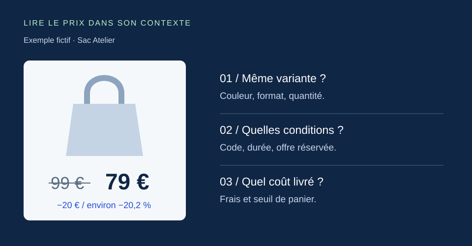

Dossier pratique
Veille concurrentielle : exemple concret et tableau à remplir
Six pages, trois concurrents fictifs, un journal rempli et une synthèse : reproduisez cet exemple de veille concurrentielle avec deux CSV gratuits.
Ouvrir le dossier ↗LE BLOG CHANGEWATCH
Des méthodes concrètes pour suivre vos concurrents et décider avec les bonnes informations.
Dossier pratique
Six pages, trois concurrents fictifs, un journal rempli et une synthèse : reproduisez cet exemple de veille concurrentielle avec deux CSV gratuits.
Ouvrir le dossier ↗
CAS PRATIQUE FICTIF
Concurrents directs et indirects, offres, positionnement et preuves : une matrice fictive pour passer de l’étude aux décisions.
Lire la méthode d’analyse ↗
GUIDE PRATIQUE
Quelles pages suivre, à quelle fréquence et avec quelle méthode ? Un guide pour organiser votre veille, comparer le suivi manuel à l’automatisation et en connaître les limites.
Lire le guide sur la veille concurrentielle